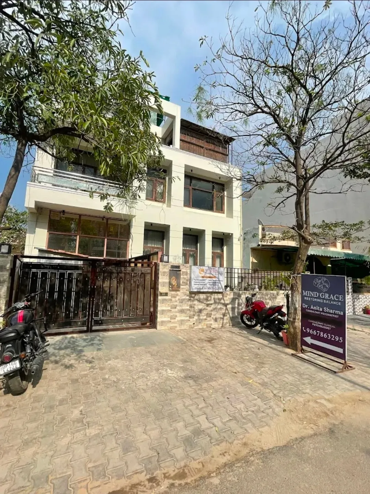

A visual tour of our facilities, therapy rooms, and team.
Loading...
Failed to load image

Clinic Exterior
An exterior photograph showing the clinic building, entrance, parking area, roadside access, and clinic signage. The image helps patients and families identify the location before visiting.
Welcome to Our Clinic
Facilities
Modern consultation rooms and waiting areas designed for comfort.
Therapy Zones
Specialized rooms for Speech, Occupational, and Behavioral therapy.
Team
Meet our dedicated professionals committed to your care.